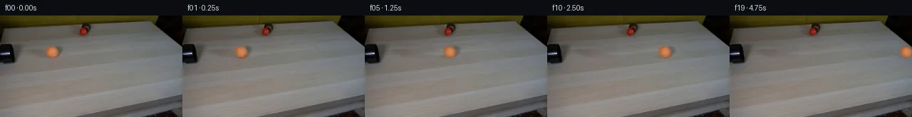

![首帧]()

Round 00
2026-11-05T00:52:54.652687+00:00像素候选变化代码 +233/−0inspection 更新
pixels 4e8ec1541dbfd0fe · code 9f4e66c7b225b843
查看本轮 generate.py 真实 diff
--- previous/generate.py
+++ current/generate.py
@@ -0,0 +1,233 @@
+"""PixelWorld case_0010 generator.
+
+Scene (from prompt.txt): a static locked-off shot of a light wooden coffee
+table with a black pipe at the left and small red and brown balls at the
+back. The orange tennis ball rolls straight out of the pipe and across the
+whole table to the right at constant velocity.
+
+Method (pure local pixel math; see METHOD.md and OBSERVATION.md):
+ 1. Frame 00 is a byte-for-byte copy of first_frame.png.
+ 2. The ball lane under the frame-0 ball is inpainted: per-row linear
+ interpolation between clean wood anchors + band-limited grain taken
+ from a clean strip of the same table -> static background.
+ 3. The orange ball is extracted as an RGBA sprite (soft alpha from
+ chroma/luma deviation). Its interior is decomposed into a fixed
+ quadratic sphere shading (camera-space light) plus a faint fuzz detail
+ layer; only the detail rotates (rolling without slipping,
+ omega = v/r ~= 1.30 rad/frame clockwise).
+ 4. The measured contact-shadow / bounce illumination field around the
+ ball (smoothed f0 / interpolated-wood ratio) is translated rigidly
+ with the ball centre and multiplies the wood.
+ 5. Frames 01-19: sub-pixel placement (bilinear resampling) with a 3-tap
+ short-exposure blend for slight motion smear. Everything outside the
+ moving lane stays pixel-identical to first_frame.png.
+"""
+from pathlib import Path
+import numpy as np
+from PIL import Image, ImageDraw
+import scipy.ndimage as ndi
+
+import artifact_io
+
+HERE = Path(__file__).resolve().parent
+
+# ---------------------------------------------------------------- trajectory
+CX0, CY0 = 72.6, 51.3 # fitted frame-0 disk centre
+RADIUS = 7.1 # fitted core radius (px)
+SPEED = 9.2 # px / frame (36.8 px/s at 4 fps)
+N = 20
+LANE_Y0, LANE_Y1 = 39, 64 # inpaint / influence lane (rows)
+FILL_X0, FILL_X1 = 57, 100 # inpainted columns (half-open)
+
+
+def load_first():
+ return np.asarray(Image.open(HERE / "first_frame.png").convert("RGB")).astype(np.float32)
+
+
+# ------------------------------------------------- 1. static wood background
+def build_background(f0):
+ """Per-row interpolation across the frame-0 ball/shadow, then grain."""
+ plate = f0.copy()
+ grain_block = np.zeros((LANE_Y1 - LANE_Y0, FILL_X1 - FILL_X0, 3), np.float32)
+ for i, y in enumerate(range(LANE_Y0, LANE_Y1)):
+ left = np.median(f0[y, 49:57], axis=0)
+ right = np.median(f0[y, 100:109], axis=0)
+ for j, x in enumerate(range(FILL_X0, FILL_X1)):
+ t = (x - FILL_X0) / (FILL_X1 - FILL_X0)
+ plate[y, x] = left * (1 - t) + right * t
+ # band-limited grain from a clean strip on the same rows
+ src = f0[y, 150:193].copy()
+ grain_block[i] = src - np.median(src, axis=0)
+ grain_block = ndi.gaussian_filter(grain_block, (0.7, 0.9, 0)) * 0.7
+ # feather grain at both seams so no statistical edge appears
+ w = FILL_X1 - FILL_X0
+ ramp_l = np.clip((np.arange(w) - 0) / 4.0, 0, 1)
+ ramp_r = np.clip((w - 1 - np.arange(w)) / 4.0, 0, 1)
+ grain_block *= (ramp_l * ramp_r)[None, :, None]
+ plate[LANE_Y0:LANE_Y1, FILL_X0:FILL_X1] += grain_block
+ return np.clip(plate, 0, 255)
+
+
+def build_smooth_plate(f0):
+ """Same interpolation without grain - denominator for the light field."""
+ plate = f0.copy()
+ for y in range(LANE_Y0, LANE_Y1):
+ left = np.median(f0[y, 49:57], axis=0)
+ right = np.median(f0[y, 100:109], axis=0)
+ for j, x in enumerate(range(FILL_X0, FILL_X1)):
+ t = (x - FILL_X0) / (FILL_X1 - FILL_X0)
+ plate[y, x] = left * (1 - t) + right * t
+ return plate
+
+
+# ------------------------------------------------------- 2. sprite extraction
+def build_sprite(f0, smooth_plate, yy, xx):
+ dist = np.hypot(xx - CX0, yy - CY0)
+ R, G, B = f0[..., 0], f0[..., 1], f0[..., 2]
+ deviation = np.abs(f0 - smooth_plate).mean(axis=2)
… diff truncated; 146 more lines …